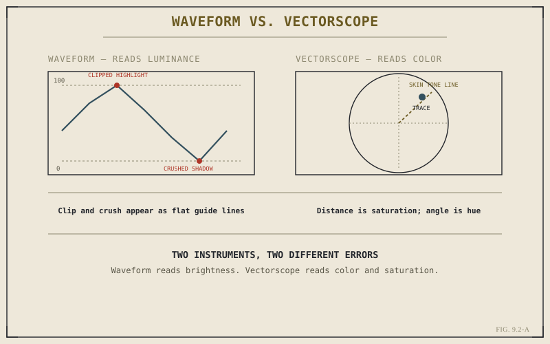

Chapter 9.1 split grading into correction and look. Both jobs share a problem that shows up before either one can be done well: your eye, looking at a monitor, is not a reliable measuring instrument. Scopes are what Resolve gives you instead — objective, real-time readouts of exactly what's in the image, independent of the room you're sitting in or how tired your eyes are. Nothing in this part after this chapter is done without them open.
Why the Eye Alone Isn't Enough
A monitor's calibration drifts. Ambient light in the room shifts how saturated or bright an image appears, sometimes dramatically, without the image itself changing at all. Human color perception adapts to context — stare at a warm shot for thirty seconds and a neutral one immediately after will read as cold, even though nothing about it changed. None of this is a flaw in you as a grader; it's simply how vision works, and it means that judging exposure or color balance by eye alone is judging against a constantly shifting reference. Scopes don't drift, adapt, or get tired. They read the actual pixel values in the frame and display them as a graph, every time, the same way.
The Waveform: Reading Luminance
The waveform monitor plots brightness directly — for every vertical slice of the frame, a trace showing how bright that column of pixels is, from a floor representing pure black to a ceiling representing pure white. A flat line pressed against the ceiling means highlight detail has clipped: information genuinely lost, not recoverable later no matter how the image is treated afterward. A flat line pressed against the floor means the same thing at the other end — crushed shadow detail. Reading the waveform is mostly about watching for those flat lines and knowing, at a glance, whether a shot's exposure is actually intact or only looks intact on an uncalibrated monitor.
The Vectorscope: Reading Color
Where the waveform reads brightness, the vectorscope reads color, laid out as a circular plot rather than a vertical one. A pixel's position on that circle encodes two things at once: its angle represents hue, and its distance from the center represents saturation — a fully desaturated, neutral pixel sits at the center regardless of what hue it would otherwise be, and saturated colors push outward toward the edge. One reference line worth knowing early is the skin tone line, a fixed angle on the scope that well-exposed human skin tends to fall along regardless of a person's actual skin tone — a fast, objective check for whether skin reads naturally or has picked up an unwanted cast.

Two instruments, two different kinds of error — brightness on one axis, color on the other.
A monitor tells you what an image looks like right now, in this room, to your particular eyes. A scope tells you what's actually in the image — and only one of those two things is still true after you change rooms.
The Histogram: A Faster, Cruder Check
The histogram is the simplest of the three, plotting how many pixels in the frame fall at each brightness level, from black on the left to white on the right, with no positional information at all — it can't tell you where in the frame a problem is, only that one exists. That limitation is also what makes it useful as a first glance: a histogram bunched entirely toward one side, or with a tall spike jammed against either edge, is visible instantly, before you've had time to study the waveform in detail. Think of it as the fastest possible health check, with the waveform and vectorscope as the tools you reach for once it's told you where to look closer.
Using the Three Together
In practice, no single scope tells the whole story, and experienced graders keep more than one open at once rather than switching between them one at a time. A shot can have perfectly balanced luminance on the waveform while carrying an obvious color cast the vectorscope makes instantly visible, or the reverse — correct color with exposure quietly clipping at one end. The habit worth building now, before Chapter 9.3 introduces the node graph these scopes will evaluate, is simple: never make a correction decision from the image alone. Check what the scope actually says, every time, until doing so is no more effortful than glancing at the image itself.
Key Concepts to Remember
- Monitor calibration, ambient light, and perceptual adaptation all make the eye alone an unreliable measuring instrument for grading.
- The waveform reads luminance — flat lines against the top or bottom guide mean clipped highlights or crushed shadows.
- The vectorscope reads color — angle is hue, distance from center is saturation, and the skin tone line checks skin for cast.
- The histogram is a fast, positionless health check; real correction decisions still come from the waveform and vectorscope together.
Cross-References Forward
| → Ch. 9.3 | The Node Graph: Building a Grade in Layers — the structure the scopes covered here will be used to evaluate. |
| → Ch. 9.1 | Revisit the split between correction and look, now with the measurement tools that make correction possible. |
| → Ch. 1.4 | Revisit color management — a scope is only trustworthy once the image feeding it has already been correctly translated. |